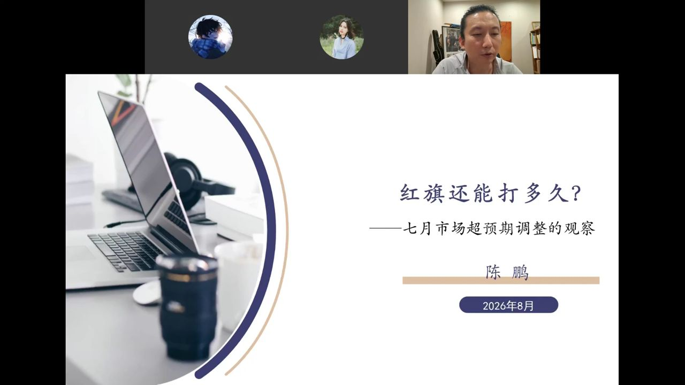
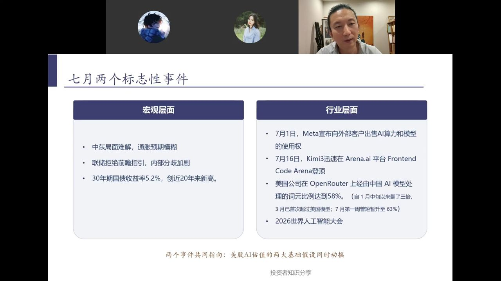
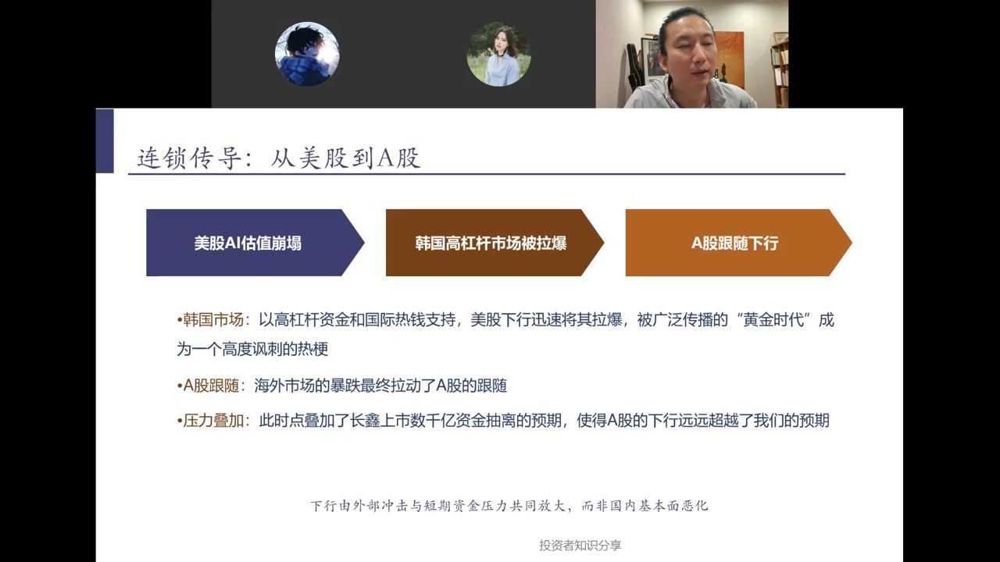
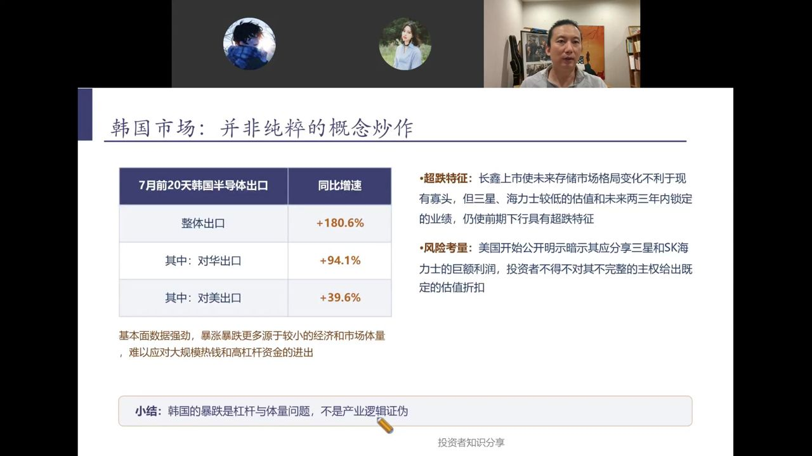
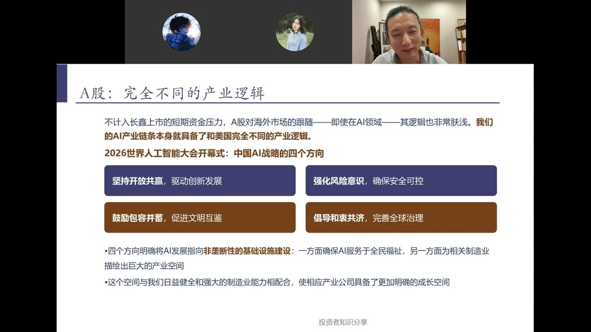
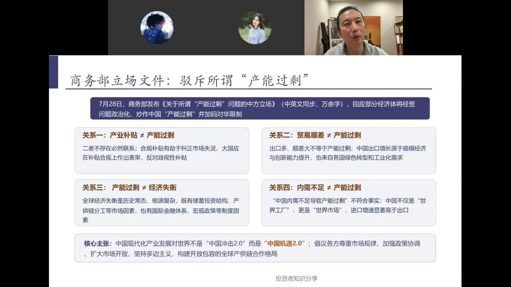
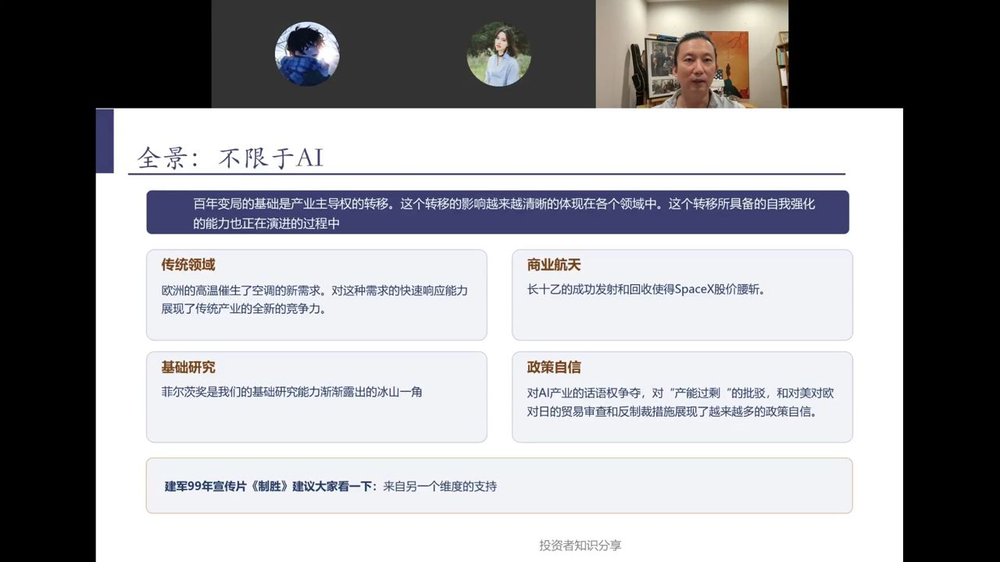
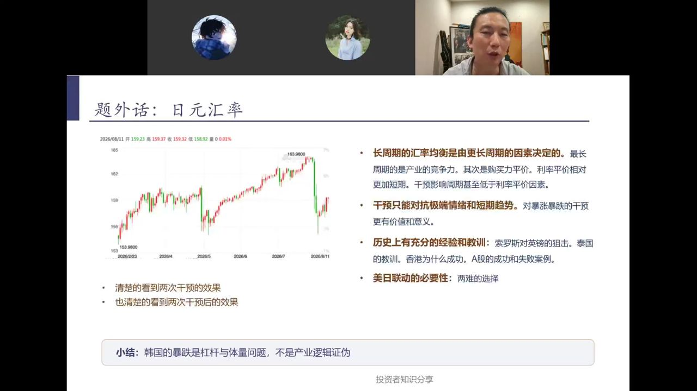
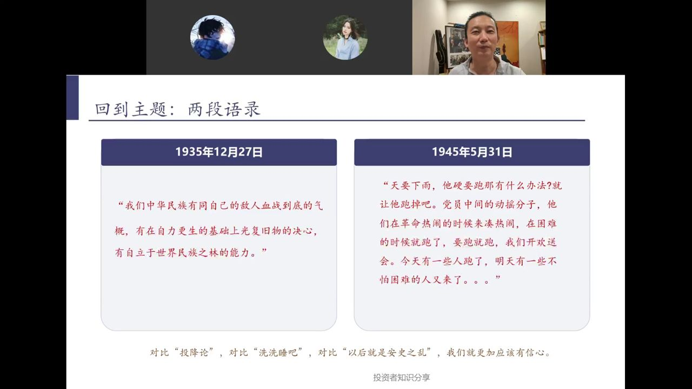

这个标题源自此前市场情绪低点时陈鹏公号的二次发文。7月市场超预期下行，他要借此回答当下最尖锐的疑问：这轮调整到底是长期逻辑破了，还是短期外部冲击？
此前陈鹏的判断是：中国长周期向上的底层逻辑（产业竞争力、长周期低利率环境）稳固，仅美韩可能出问题带动小幅调整，无需过度防范。而7月的调整幅度远超预期。

7月冲击从宏观与行业两个层面同时发生，共同指向——美股AI估值的两大基础假设同时动摇。
美国AI估值此前隐含两大假设："能力无上限"和"全球无竞争/垄断"。7月一连串事件接连打破美国AI垄断预期——中国模型在全球基准上反超，Meta也开始对外出售算力，估值风险超预期落地。

调整沿一条链条传导：
压力叠加：此时点叠加了长鑫上市数千亿资金抽离的预期，使得A股的下行远远超出预期。下行由外部冲击与短期资金压力共同放大，而非国内基本面恶化。

7月韩国股市几乎腰斩，从9000多点跌至5000来点。但陈鹏强调：韩国的暴跌是杠杆与体量问题，不是产业逻辑证伪。
暴涨暴跌更多源于较小的经济和市场体量，难以应对大规模热钱和高杠杆资金的进出。
韩国小市场上涨仅靠三星、海力士，叠加高杠杆和国际热钱支撑，十分脆弱。类比日本曾受国际热钱冲击后长期低迷——热钱冲击的危害性在于，它砸的是资金结构，不是产业逻辑。

不计入长鑫上市的短期资金压力，A股对海外市场的跟随——即使在AI领域——其逻辑也非常肤浅。中国的AI产业链条本身就具备了和美国完全不同的产业逻辑。
四个方向明确将AI发展指向非垄断性的基础设施建设：一方面确保AI服务于全民福祉，另一方面为相关制造业描绘出巨大的产业空间。这个空间与中国日益健全和强大的制造业能力相配合，使相应产业公司具备了更加明确的成长空间。
我方以合作共赢、兼容并包为基础，对方以封闭垄断为基础，二者本无共振理由。对方的问题恰恰源于我方发展向好——其受限、失势反而会让出市场空间，助力中国自主产业链份额提升。此时跟随对方下跌，反而是投资机会。

7月28日，商务部发布《关于所谓"产能过剩"问题的中方立场》（中英文同步、万余字），回应部分经济体将经贸问题政治化、炒作中国"产能过剩"并加码对华限制。
核心主张：中国现代化产业发展对世界不是"中国冲击2.0"，而是"中国机遇2.0"。对比中美宏观政策：中国因掌握全球产业链主导权，政策指向明确可预测；美国受多重两难困局，难以给出清晰指引。2023年华为Mate60推出，标志中国电子产业链基本完整。

百年变局的基础是产业主导权的转移，这个转移的影响越来越清晰地体现在各个领域，且正具备自我强化的能力。不必把目光全聚焦在AI上：
陈鹏特别推荐建军99年宣传片《制胜》——"来自另一个维度的支持"（军事力量支撑）。叠加军事力量支撑，中国不存在悲观理由。

回应日元汇率问题，陈鹏讲了三层逻辑：
日元长期贬值趋势源于日本产业竞争力下滑等长期核心因素，单纯汇率干预仅能影响短期走势，无法扭转长期趋势。图上可以清楚看到两次干预的效果，也清楚看到两次干预后的效果。

陈鹏引用毛主席两段语录，从战略和战术两个层面传递信心：
1935年12月27日："我们中华民族有同自己的敌人血战到底的气概，有在自力更生的基础上光复旧物的决心，有自立于世界民族之林的能力。"
1945年5月31日："天要下雨，他硬要跑那有什么办法？就让他跑掉吧。党员中间的动摇分子，他们在革命热闹的时候来凑热闹，在困难的时候就跑了，要跑就跑，我们开欢送会。今天有一些人跑了，明天有一些不怕困难的人又来了。。。"
对比"投降论"，对比"洗洗睡吧"，对比"以后就是安史之乱"，我们就更加应该有信心。只要底层逻辑正确、站对趋势，就无需因动摇者离场而焦虑——判断2026年7月市场攻守态势已逆转，当前是长周期明确低点；8月虽行情低迷，但已是中长期底部。
鹏哥叮嘱：建立投资信心，7月是市场攻守转折点。切勿参与三倍做多指数这类高风险操作。